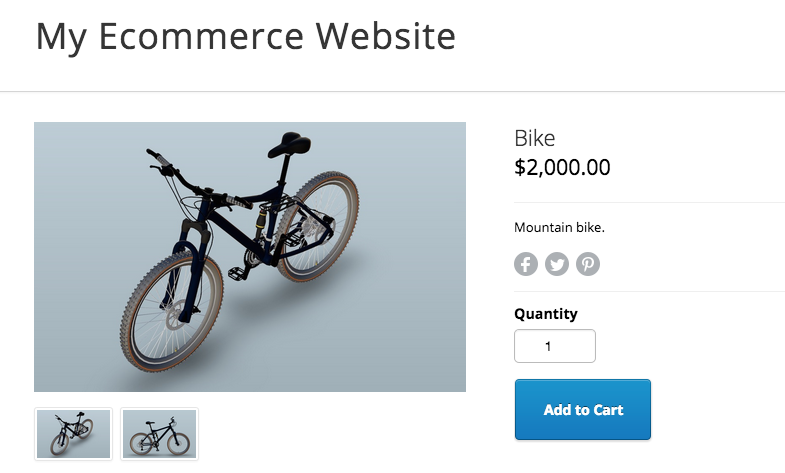

3D Content on the Web
Do you think it is too difficult or too early? No, it is easy and just in time!
Have some fun
About Me
Daniel Du
Developer Evangelist at Autodesk
@daniel_du
Photoshop/Illustrator for visual designers
AutoCAD for interior designers
Rhino/Solidworks/Fusion for industrial designer
Revit for architects
Traditionally
The designer makes up a design
they send it over to their client
client needs to download a software to view the file
Outputs are proprietary formats

Universal formats out there
The problem?
- Extremely lossy
- Often lose meta data like quantity, width, height
- Rendered images and pdf are 3D into 2D
WebGL
JavaScript API that lets browsers render 3D
It's not a W3C standard...
but every browser supports it

It's a difficult technology to master
Autodesk 推出了 3D/2D 浏览器...
上传你的模型
REST API
在浏览器中浏览
JavaScript API
免费使用!
Would you rather see this on your ecommerce website..
or this?
Supported File Formats
ipt, neu, stla, stl, xlsx, jt, jpg, skp, prt, dwf, xls, png, sldasm, step, dwg, zip, nwc, model, sim, stp, ste, f3d, pdf, iges, dwt, catproduct, csv, igs, sldprt, cgr, 3dm, sab, obj, pptx, cam360, jpeg, bmp, gbxml, exp, ppt, doc, wire, ige, rcp, txt, dae, x_b, 3ds, rtf, rvt, g, sim360, iam, asm, dlv3, x_t, pps, session, xas, xpr, docx, catpart, stlb, tiff, nwd, sat, fbx, smb, smt, ifc, dwfx, tif
可能的应用
阿
现在就开始
github上n多示例代码详细看看API
客户端JavaScript API保持联系
Tweet at me @daniel_du
daniel.du@autodesk.com
关注我们的微信公众号: